About Me
Automation engineer with 2+ years turning manual, error-prone workflows into scalable self-serve systems that cut busywork and tighten data. I build tools that keep operations reliable and auditable and advise an early-stage startup using computer vision to reduce medication errors.
Technical Skills
-
Programming
Python C++ C# Java
-
Web
HTML CSS JavaScript PHP
-
Database
MySQL PostgreSQL
-
Mobile
Swift Objective-C++ Kotlin
-
Tools & Frameworks
Docker Kubernetes Git Power Apps Power BI Power Automate
Education
Manhattan University (formerly Manhattan College)
B.S. Computer Science — AI & Machine Learning Concentration
- Dean's List (2022 – 2025), Epsilon Sigma Pi, Tau Sigma Kappa, Next in Merit for Computer Science Medal.
- Coursework: Data Structures & Algorithms, Object Oriented Programming, Software Engineering, Cloud Computing & Virtualization, Cyber Security, Computer Networks, Operating System (Linux), Data Mining, Neural Network & Learning Systems.
- Clubs: ACM (Secretary, October 2022 – May 2024).
Experience
Process Improvement Analyst
Con Edison September 2025 – Present- Designed and deployed automated routing, audit trails, targeted reminders, and a controlled interface supporting inter-company cash transfers, eliminating bottlenecks, reducing errors, tightening data accuracy, and saving 20+ hours/month.
- Translated business requirements into scalable low-code solutions, workflow automations, data pipelines, and interfaces with Microsoft services, improving efficiency, process reliability, and cross-system data integrity.
- Cut manual status reporting, streamlined project updates and document flow, and gave managers, clients, and dev teams real-time portfolio visibility by overhauling the Project Intake Power App with a full project-tracking system, dynamic milestone logic, non-linear stage progression, priority scoring, multi-view stage layouts, and an executive KPI-dashboard
Software Engineering Intern
Orange & Rockland Utilities (Con Edison Subsidiary) April 2024 – June 2025- Digitized paper-based maintenance reports with a Power App that enforced validation, flagged anomalous readings, generated compliance-ready PDFs, and eliminated missing documentation, cutting process time by 45%.
- Implemented role-based PDF and email routing driven by compliance flags and user inputs, reducing email churn and eliminating manual distribution errors.
- Designed and deployed an SF6 tracking system that logs cylinder refills, transfers, and losses across equipment, enabling compliance with new environmental regulations by surfacing discrepancies and gas-loss events at each transfer point.
- Built a centralized logistics request app for external vendor crews, consolidating data entry and improving scheduling speed and team coordination.
- Led QA testing to catch critical logic, calculation, and UI issues pre-launch; authored user documentation and trained 20+ personnel, achieving 30+ processed reports within the first month.
Student Researcher
Manhattan College School of Science Summer Research June 2023 – August 2023- Built a Word2Vec-based model to analyze semantic gaps in SNOMED CT medical taxonomy.
- Achieved ~80% accuracy in detecting missing clinical attributes, improving ontology completeness.
- Developed validation scripts in Python/MySQL to detect attribute inconsistencies in clinical data, helping ensure standardized terminology usage in medical records.
- Optimized data processing by indexing, normalizing tables, batching queries, and enabling caching, reducing latency by 30%.
Peer Mentor (IT Associate)
Manhattan College Opportunity Programs June 2022 – August 2023- Provided live and on-call support for setting up enviornments and troubleshooting both software and hardware issues during the summer bridge program.
- Led technical workshops and helped organize and staff orientation logistics for 30+ incoming students
- Managed logistics and scheduling for a small team (5 members) covering tech, events, and meals; coordinated duties and ensured smooth daily operations.
Co-founder
Aeon Scans, Digital Manga Company May 2020 – August 2022- Led a remote team of 50+ across editing, typesetting, dev, design, and translation, producing weekly releases for 15+ manga series reaching 3K-10K readers per chapter.
- Built internal dashboards and bots to automate team tasking, quality control workflows, and recruitment pipelines, cutting manual coordination by ~30%.
- Oversaw release quality and resolved internal conflicts across departments and with external partners, keeping standards high and community feedback minimal.
- Maintained an active community (~500 users) and hosted sneak peeks to keep readers engaged and reduce churn during production lulls.
Projects
Fake Group Chat Maker
Role: Full-Stack Developer, Designer
A fully client-side WhatsApp-style group chat simulator built for creating realistic animated conversations for skits, slides, short videos, and storytelling. The tool supports multi-user group chats with avatars, timeline-based playback, typing animations, and script parsing — all running entirely in the browser with no backend or data collection.
- Designed and implemented a full event-driven conversation engine with message events, typing states, delays, reactions, and runtime playback controls
- Built a script parser that converts plain text (
Name: message,/typing,/delay, etc.) into a structured, editable timeline - Created a realistic WhatsApp UI simulation including grouped message runs, avatar logic, timestamps, read receipts, custom wallpapers, and light/dark themes
- Implemented a “You” typing system that animates messages through a fake keyboard before sending, enhancing realism during playback
- Developed a fully client-side data model with localStorage persistence, supporting custom avatars, backgrounds, and group icons with zero backend dependency
Screenshots
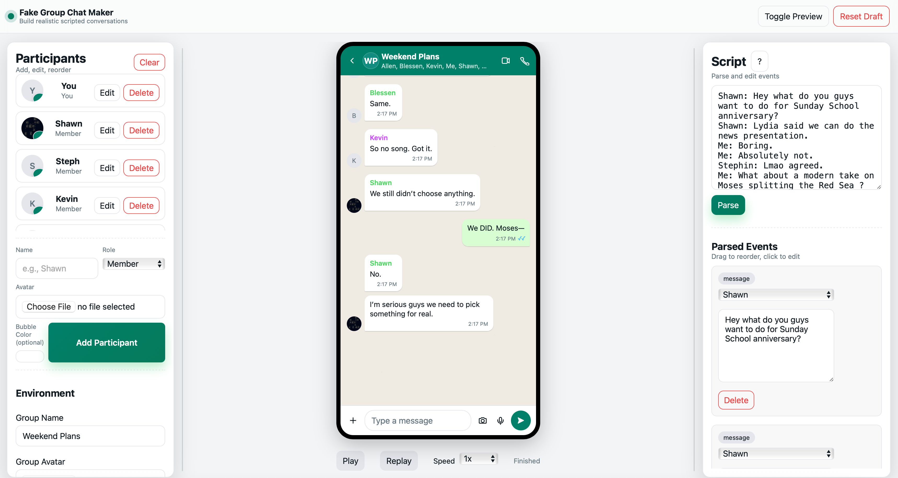
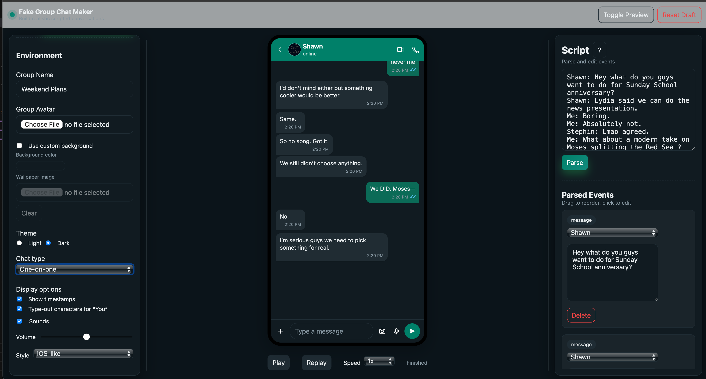
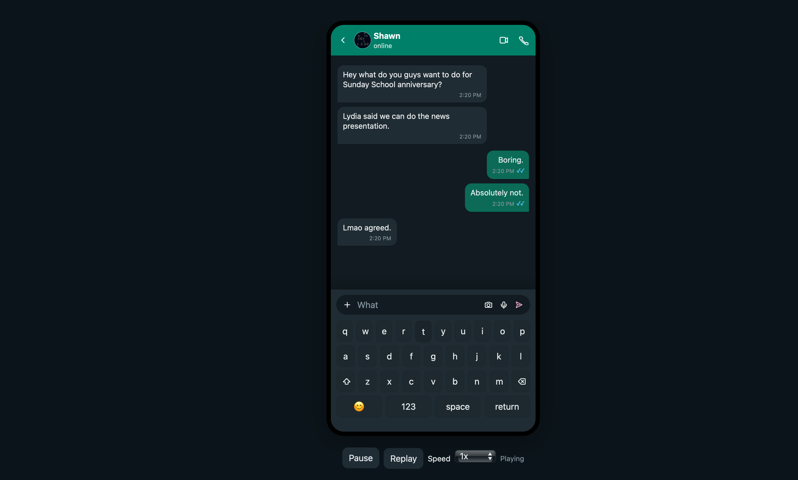
Links:
SustainTrail
Role: Product Owner, Scrum Master, Developer, Designer
An Android app developed for Capstone. The app transforms sustainability from an occasional chore into a living routine that meets the scale and urgency of the crises now unfolding on both coasts. In short, our app makes sustainable living actionable, social, and measurable - “making the world 0.1 % greener every day through technology and community.”
- Built the full Figma design system and coded splash, login, and registration flows in Jetpack Compose + Material 3
- Containerized and deployed a FastAPI + PostgreSQL backend whose async endpoints serve trail and climate data
- Wrote Python ingestion jobs to pull, clean, and schedule-update third-party climate/event feeds, ensuring fresh, reliable data
Screenshots
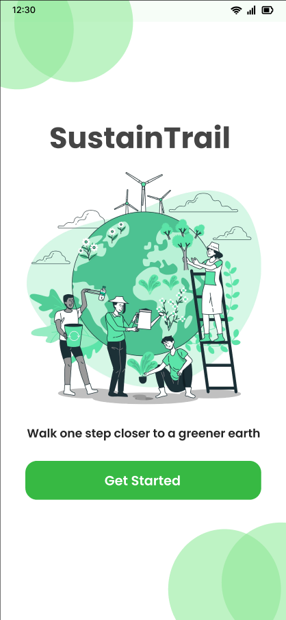
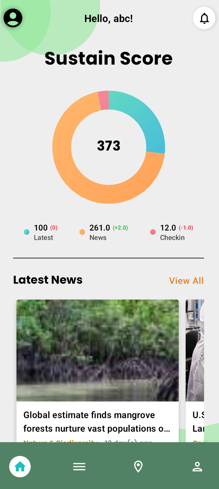
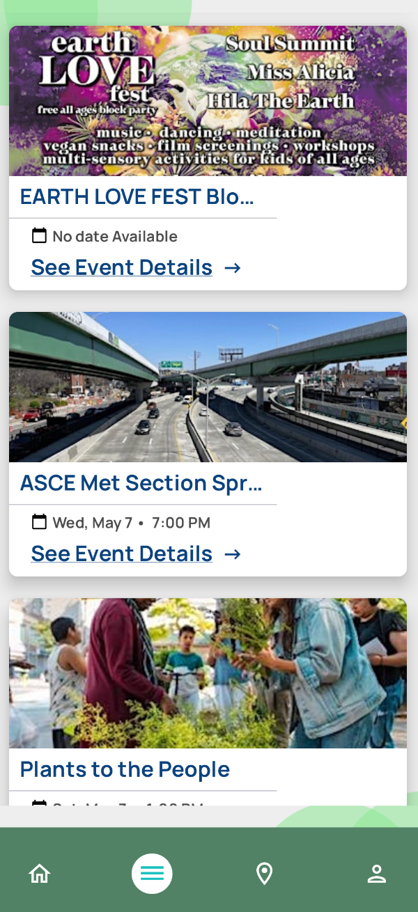
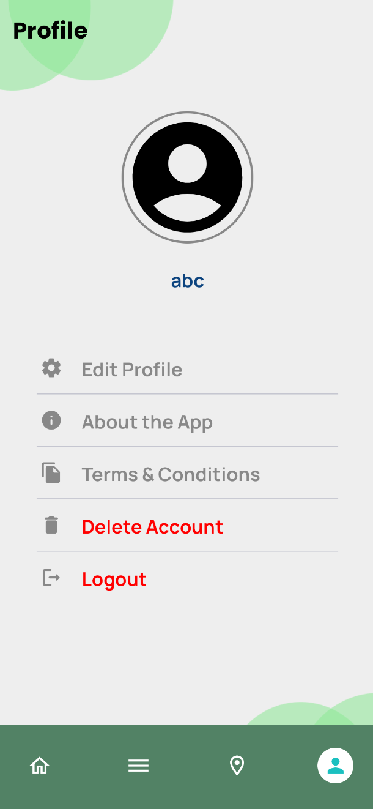
Links:
DOR – Digitized Observation Rubric
Role: Product Manager, Developer, Designer
An iPad app developed for the Chair of Education at Manhattan College to digitize the observation and scoring process for student teachers, replacing pen-and-paper checklists with a robust native iOS experience.
- Led client communications and defined functional requirements for rubric creation, scoring, and data reporting.
- Designed complete UI/UX in Figma, focusing on clarity, focus, and real-time scoring usability.
- Built custom forms (checklist page) to manage categories, sub-categories, dynamic scores, counters, and rubric comments.
- Implemented local storage and offline functionality to support privacy and reliability in low-connectivity classrooms.
Screenshots
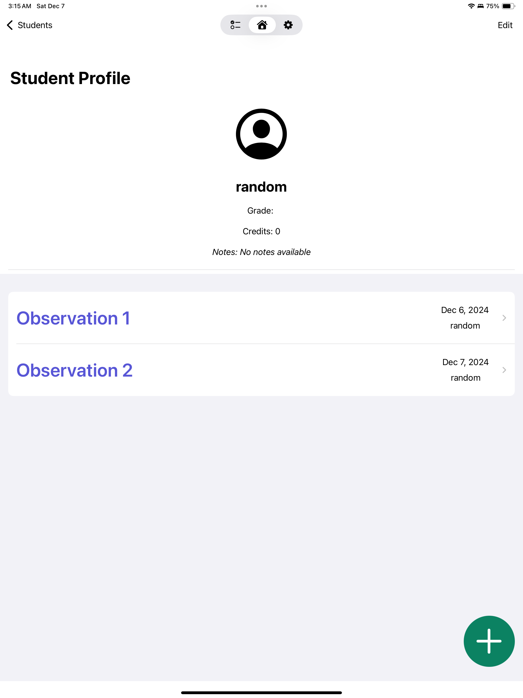
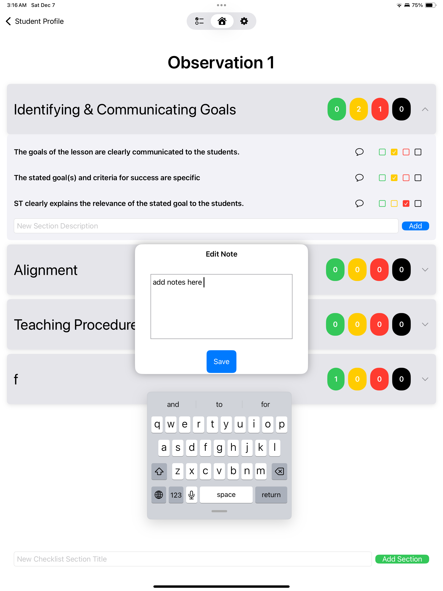
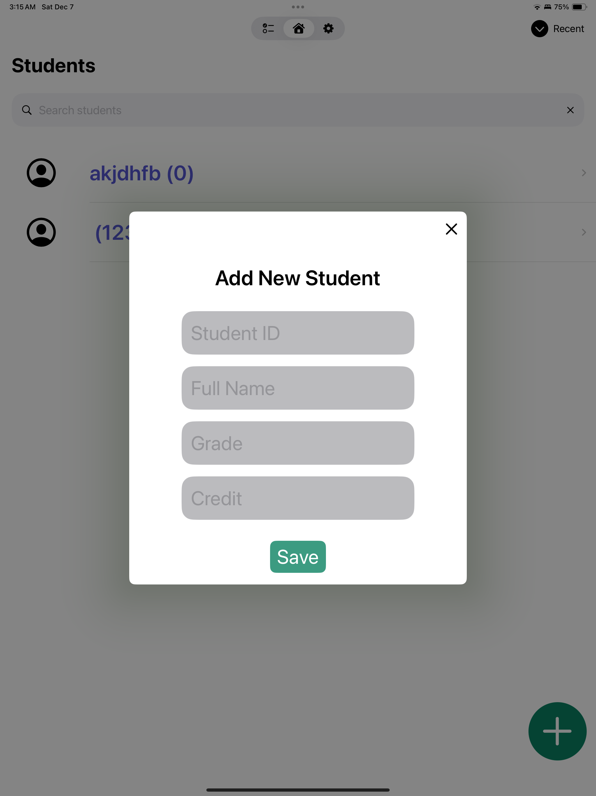
Links:
Detecting Inconsistencies in SNOMED CT
Role: Researcher & ML Developer
For this project, I used machine learning and sibling-concept analysis to detect modeling inconsistencies in SNOMED CT, a medical terminology standard used in 80+ countries. Presented at Manhattan College’s research symposium.
- Built an auditing pipeline using Word2Vec and attribute modeling to identify semantic mismatches between 350K+ clinical concepts.
- Flagged attribute inconsistencies with ~83% precision by analyzing lexical and structural similarity across hierarchies.
- Optimized MySQL-based data retrieval through indexing, normalization, batching, and caching to improve audit performance.
- Visualized clustering of similar terms and audited output via accuracy dashboards, driving faster manual verification.
Screenshots
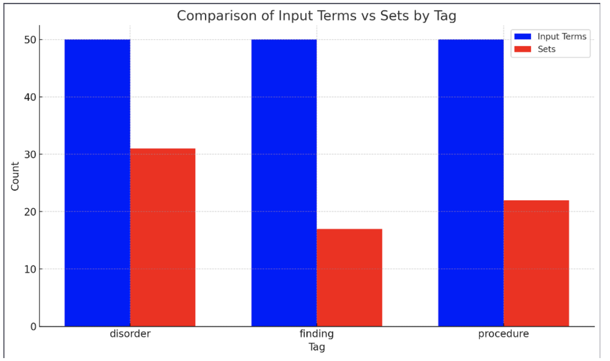
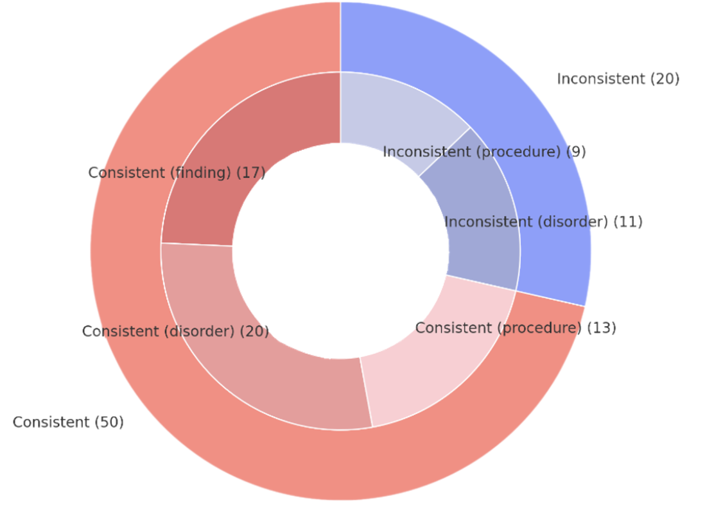
Links:
Matrix Calculator for iOS
Role: Developer
High-performance matrix calculator app (iOS) built using C++ and Objective-C++ to support intensive computation with real-time UI interaction.
- Implemented Gauss and Gauss-Jordan elimination algorithms in a C++ backend with Objective-C++ bridging.
- Designed and integrated a responsive SwiftUI interface for dynamic matrix input and result rendering.
- Handled runtime validation for matrix dimensions and edge cases to ensure fault-tolerant operations.
Screenshots
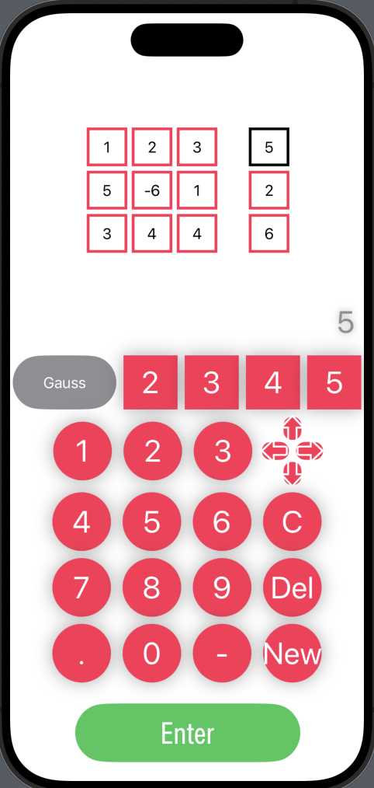
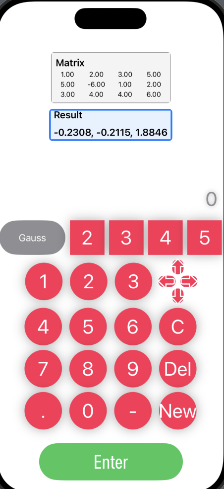
Links:
Contact
If you're interested in collaborating or have a role in mind, reach out via email or connect on LinkedIn/GitHub.